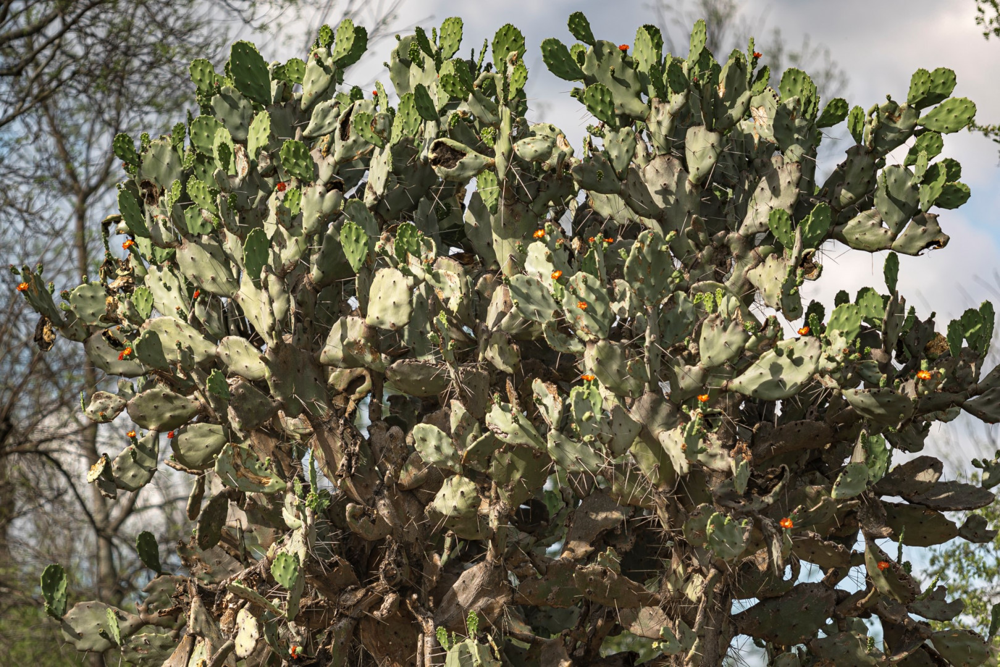
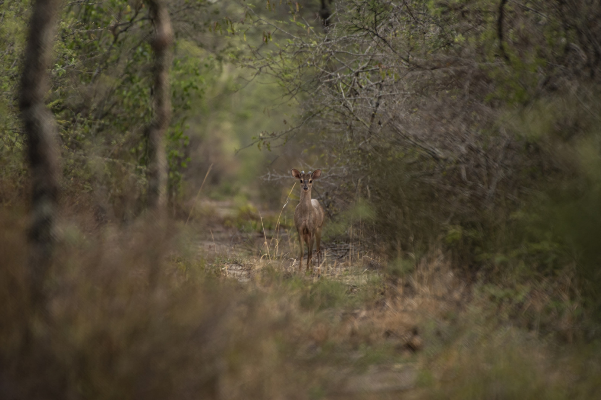
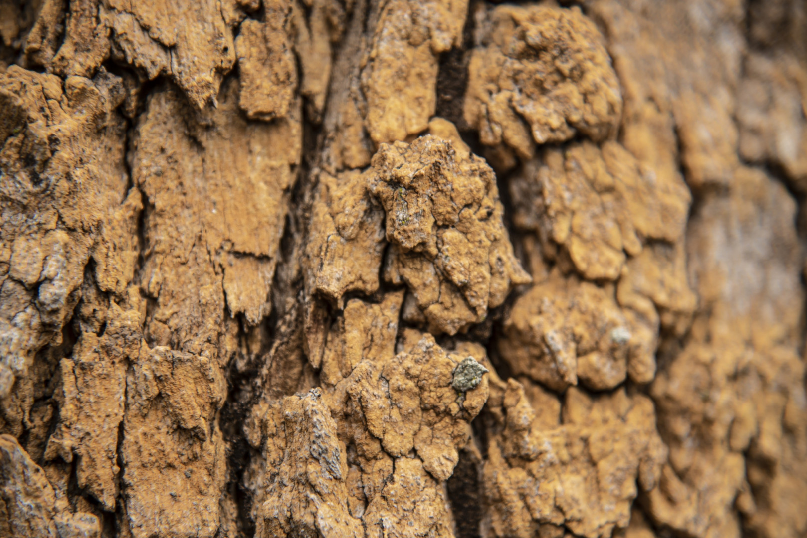
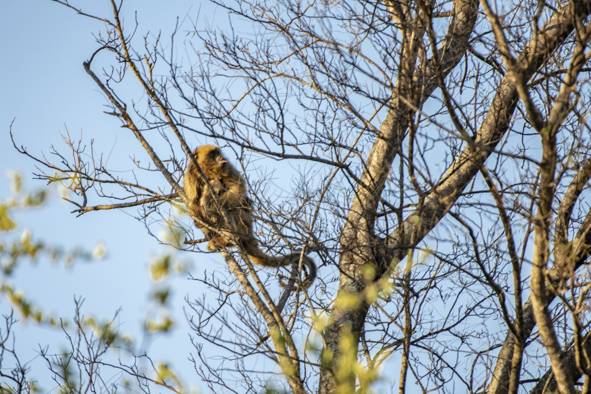

Ubicado en el norte de Santiago del Estero, es un refugio para la biodiversidad del Chaco Semiárido, donde la vida se abre paso entre condiciones hostiles y ausencia de cuerpos de agua.
Fue creado en respuesta a la deforestación causada por la explotación forestal intensiva, el área conserva bosques originales de quebracho colorado y blanco, guayacán, algarrobo, itín y mistol.
Posee un clima subtropical cálido, con estación seca marcada y gran amplitud térmica. Las precipitaciones alcanzan los 700 mm anuales, concentrados entre octubre y marzo. Las temperaturas medias son de 15° C en invierno (con bajo porcentaje de heladas) y 28° C en verano (con máximas absolutas que superan los 50° C).
Flora
Además del quebracho colorado santiagueño (Schinopsis lorentzii) integran estos espinosos bosques árboles como el quebracho blanco, el itín, el guayacán, el mistol y el yuchán (palo borracho), entre muchos otros. En antiguos cauces de ríos se desarrollan pastizales.
Fauna
Hay tres representantes de nuestra fauna en peligro de extinción que habitan este Parque Nacional, que merecen destacarse: el yaguareté, el tatú carreta y el chancho quimilero. Este último denominado así porque se alimenta de los frutos y pencas del quimil (Opuntia quimilo), un cactus arborescente típico de esta región. Pero también el oso hormiguero grande, el águila coronada y la boa de las vizcacheras, entre otras especies amenazadas de la fauna nativa.




